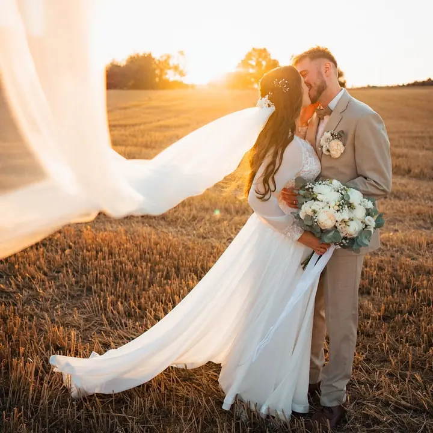
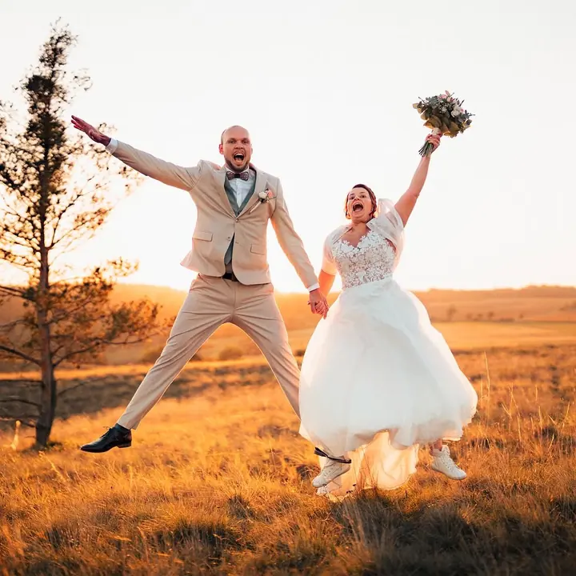
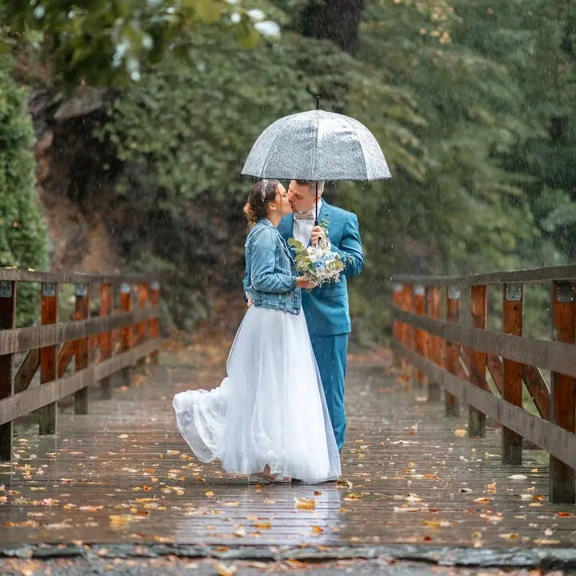

jedna
Svatby
Na svatbě nejsem jen ten s foťákem, ale váš parťák a svatební bodyguard. Lovím momentky všech hostů a místo mučení pózováním spolu zmizíme na půl hodinky, zasmějeme se a u toho udělám pár cvaků.

Svatební a rodinný fotograf · Kutná Hora, Kdekoliv je potřeba

Jmenuji se Lukáš Ochrana a fotím svatby, rodiny a páry z Kutné Hory a kdekoliv je potřeba. Nechci být jen ten s foťákem, ale parťák, který ten den prožije s vámi. Žádné oficiality ani mučení pózováním, jen upřímný smích a pohoda.
Více o mně
Co fotím
jedna
Na svatbě nejsem jen ten s foťákem, ale váš parťák a svatební bodyguard. Lovím momentky všech hostů a místo mučení pózováním spolu zmizíme na půl hodinky, zasmějeme se a u toho udělám pár cvaků.
dvě
Focení pro velké rodiny, budoucí maminky i zamilované páry. Projdeme se, popovídáme si a vzniknou přirozené fotky bez strojených póz a bez objímání stromu jako z devadesátek.
Na plese zachytím všechno od prvního tance až po moment, kdy se kámoš snaží vypít punč ze saxofonu. A na oslavě chytnu i babiččiny náhradní zuby.
Svatební fotokoutek s fotobudkou, kde se vyřádí všichni hosté. K balíčku Standard ho máte se slevou 30 %.

Vteřina na spoušti, věčnost v albu.


Za objektivem
Jsem Lukáš, třicítku už mám dávno za sebou, mou vášní jsou motorky a jsem hrdý táta jedné malé princezny. Miluju cestování a život žiju tak, jako by zítřek neměl přijít. Bydlím u Kutné Hory, ale za focením vyrazím kamkoliv je potřeba.
Na fotkách je vždycky vidět, když si focení někdo užívá společně s vámi. Proto chci být součástí vašeho dne: zasmát se s vámi, připít si na radost a pohybovat se mezi hosty tiše jako ninja. Zažil jsem už svatbu, kde chyběl dort, i takovou, kde začalo hořet, takže mě jen tak něco nerozhodí.
Buďme na ten jeden den tým, ať to stojí za to. A až se za deset let podíváte na fotky, řeknete si: „To byla tenkrát jízda!“
Lukáš
Ozvěte se přes formulář, e-mailem nebo zprávou. Probereme termín, místo a vyberete si balíček, který vám sedí.
Od prvního kafe jedeme na přátelské vlně. Řekněte mi, na čem vám záleží, a společně vymyslíme, jak to pojmout.
Jsem s vámi od příprav až po zábavu. Na párové fotky zmizíme na půl hodinky, probereme život a u toho udělám pár cvaků.
Snímky citlivě upravím a pošlu vám je přes cloud. U svatebního balíčku Standard je to do 3–4 týdnů.
Portfolio
Otázky
Krátký balíček na 2 hodiny obřadu a portrétů stojí 9 990 Kč (duben až říjen jen ve všední dny). Balíček Standard na 8 hodin s více než 450 upravenými fotkami stojí 22 990 Kč.
Vůbec. Nikoho nebudu dvě hodiny nutit k romantickým pohledům do dálky. Zmizíme spolu na půl hodinky, zasmějeme se a vzniknou přirozené momentky.
Mini s 5 upravenými fotkami stojí 2 500 Kč, Střed s 10 fotkami 3 500 Kč a Megapack s 20 fotkami 4 500 Kč. Další fotky jsou možné za příplatek.
Ano. Doma jsem u Kutné Hory, ale fotím kdekoliv je potřeba.

Napište pár vět o tom, co si představujete. info@luksafoto.cz